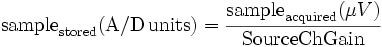

gUSBampADC
User Reference
Function
The gUSBampADC filter acquires data from any number (tested up to four) g.USBamp EEG amplifiers. g.USBamp is an amplifier/digitizer combination from g.tec medical engineering GmbH/Guger Technologies OEG (http://www.gtec.at). Support for this device in BCI2000 consists of two components: A BCI2000-compatible Source Module (gUSBamp.exe) and a command-line tool (USBampgetinfo).
g.USBamp Hardware
The USBamp consists of 16 independent 24-bit A/D converters that can sample at up to 38.4kHz per channel. Because there is one A/D converter for each channel, one particular sample is digitized at the exact same time for each channel. This is unlike with traditional A/D converter boards that only have one A/D converter. BCI2000 has a feature that can align samples in time (parameter AlignChannels). Because this feature is not needed in conjunction with the USBamp, it needs to be turned off (i.e., AlignChannels needs to be 0).
Drivers
With the release of the Version 3.0 g.USBamp, there is now a small problem with the gUSBamp.dll included in BCI2000. The DLL included with BCI2000 was intended to be used with g.USBamp Version 2.0 hardware. If Version 3.0 hardware is used with the current BCI2000 distribution, the gUSBampADC module will default to using the Version 2.0 DLL which will not function.
Drivers come with the g.USBamp hardware - the correct drivers to match the version of the hardware. If the installer is used to install the drivers for the g.USBamp, it will also place the g.USBamp DLL into your WINDOWS/system32 folder. If the DLL in BCI2000/prog is deleted, the DLL appropriate for use with your g.USBamp hardware should be used.
In short, in order to make Version 3.0 amps work with the current BCI2000 distribution, simply delete the gUSBamp.dll file from your BCI2000/prog folder.
Here is a grid of what driver/amp/dll combinations work:
| Version 2.0 amp | 2.0 DLL | 3.0 DLL |
| 2.0 Driver | Works | Works |
| 3.0 Driver | Does Not Work | Does Not Work |
| Version 3.0 amp | 2.0 DLL | 3.0 DLL |
| 2.0 Driver | Does Not Work | Does Not Work |
| 3.0 Driver | Does Not Work | Works |
Parameters
Parameters common to all source modules are described under User Reference:DataIOFilter. In addition, the gUSBampADC provides the following parameters:
DeviceIDMaster
Serial number (e.g., UA-2007.01.01) of the master device. If you only have one device, this parameter has to equal DeviceIDs. If you have more then one device, then this parameter represents the serial number of the device whose SYNC goes to the slaves, i.e., the only device that has a cable connected at SYNC OUT, but none connected to SYNC IN. If only one device is connected, this parameter may be set to auto.
DeviceIDs
List of serial numbers (e.g., UA-2007.01.01) of all devices. If you have more than one device, this list determines the order of the channels in the data file. If only one device is connected, this parameter may be set to auto.
FilterEnabled
Choose 1 if you want a pass band filter, and 0 if you don't. The gUSBamp is a DC amplifier and thus you most likely will want a pass band filter. Please note that, because the g.USBamp internally has a 5kHz antialiasing filter and always samples with 38.4kHz, you DO NOT need to enable any filter if you do not want. You will never experience aliasing.
FilterHighPass
High pass frequency for pass band. You need to query the amp for possible values. See description of the USBampgetinfo tool for more info.
FilterLowPass
Low pass frequency for pass band. See description of the USBampgetinfo tool for more info.
FilterModelOrder
Model order for passband filter. See description of the USBampgetinfo tool for more info.
FilterType
Type of passband filter:
- 1=CHEBYSHEV,
- 2=BUTTERWORTH.
NotchEnabled
Choose 1 if you want a notch filter, and 0 if you don't.
NotchHighPass
Similar to FilterHighPass.
NotchLowPass
Similar to FilterLowPass.
NotchModelOrder
Similar to FilterModelOrder.
NotchType
Similar to FilterType.
SampleBlockSize
Samples per channel per digitized block. Together with the sampling rate, this parameter determines how often per second data are collected, processed, and feedback is updated. For example, at 600 Hz sampling and a SampleBlockSize of 20, the system (e.g., source signal display, signal processing, and stimulus presentation) would be updated 30 times per second.
SamplingRate
The sampling rate of all connected USBamps. If one wants to use a bandpass or a notch filter, there needs to be a filter configuration for that particular sampling rate (see the section on the [USBampgetinfo] tool). (Guger Technologies can provide you with a new driver configuration file if you need a different filter.)
The USBamp supports the following sampling rates: 32, 64, 128, 256, 512, 600, 1200, 2400, 4800, 9600, 19200, and 38400 Hz. All sampling rates are supported for one or more amplifiers. If you are sampling at high rates and from multiple amplifiers, the CPU may be overloaded depending on the speed of your computer and the BCI2000 configuration. In case you are experiencing problems (e.g., data loss, jerky display, etc.), increase the SampleBlockSize so that you are updating the system less frequently (usually, updating the system 20-30 times per second is sufficient for most applications), and increase Visualize->VisualizeSourceDecimation. This parameter will decrease the number of samples per second that are actually drawn in the Source display. For example, at 38400 Hz, 4 amplifiers (64 channels), and a system update of 30 Hz, the computer would have to draw more than 73 million lines per second in the Source display!
SignalType
Defines the data type of the stored signal samples (int16 or float32). If the data type is int16, signal samples (which are produced by the amplifier in units of μV) are converted back into virtual A/D units (see Data Storage section below). If the data type is float32, the signals are stored in units of μV. In this case, SourceChOffset should be 0, and SourceChGain should be 1 (since the conversion factor from μV into μV is 1).
SourceCh
The total number of channels across all USBamp devices.
SourceChDevices
The number of channels acquired from each device. If there is only one device, this parameter has to equal SourceCh. For example, '16 8' will acquire channels from the first device listed under DeviceIDs, and 8 channels from the second device listed under DeviceIDs. Data acquisition always starts at channel 1. The sum of all channels (e.g., 24 in this example) has to equal the value of SourceCh.
SourceChList
The list of channels that should be acquired from each device. The total number of channels listed should correspond to SourceCh. For more than one device, SourceChDevices determines how the SourceChList values are mapped to each device. For example if SourceChDevices = '8 8' and SourceChList = '1 2 3 4 13 14 15 16 5 6 7 8 9 10 11 12', then channels 1-4 and 13-16 will be acquired on the first device, and channels 5-12 will be acquired on the second device. These channels will be saved in the data file as 16 contiguous channels. The order of channels does not matter; i.e., '1 2 3 4' is the same as '2 3 1 4'. The channels are always in ascending order on a single device. Channels may not be listed twice on a single device; e.g., entering '1 2 3 4 5 6 7 1' if SourceChDevices = '8' will result in an error. If this parameter is left blank (the default), then all channels are acquired on all devices.
BipolarChList
A list of channels used for a bipolar montage. Each entry is configured as the reference for a source channel, based on the channel order. The number of values should equal both SourceCh and the number of values in SourceChList (if SourceChList is not empty). If BipolarChList is empty, then the standard referential recording montage is used. If a value of '0' is entered, then the reference channel is used for that channel. Finally, channel labels may be used.
As an example, a sequential bipolar montage for 8 channels could be configured like:
2 3 4 5 6 7 8 1
meaning that channel 1 is referenced to channel 2, channel 2 is referenced to channel 3, and so on. For another example, 10 channels can be configured so that the first 6 are bipolar, and the last four are referential, e.g.:
C3 F3 C4 F4 Pz Oz 0 0 0 0
DigitalInput
Turn on digital input. If turned on, the last sampled channel on each amplifier will contain sampled values of digital input 0 on the DIGITAL I/O input block on the back of the device. For example, if SourceCh is 8, then channels 1-7 will represent analog inputs, and channel 8 will represent the digital input. Thus, if DigitalInput is turned on, SourceCh and SourceChDevices may be a maximum of 17.
DigitalOutput
Turn on digital output. If turned on, the digital output channel 0 is set low for the duration of data acquisition, and set high at the end. This is primarily used for the BCI2000 Certification process, but may also be employed for other purposes, such as synchronizing acquisition with an external device.
DigitalOutputEx
New in Version 3.0 If an expression is put here, digital output 1 will be set high whenever this expression evaluates true (nonzero) and low when the expression evaluates false (zero). Boolean expressions work well for this ( ex. ( ( StimulusCode == 0 ) && Running ) ).
AcquisitionMode
If set to analog signal acquisition, the g.USBamp records analog signal voltages (default). If set to Calibration, the signal output is a sine wave test signal generated by the g.USBamp (which can be used to verify correct system calibration). If set to Impedance, regular analog signal acquisition is preceded by an impedance test. This impedance test reports input impedances for each channel in kOhms. In impedance mode, if the ground and reference is connected in the amp internally (using the CommonGround and CommonReference parameters), then you need to connect the ground and reference to block 4.
CommonGround
This parameter determines whether the g.USBamp internally connects the GND inputs from all blocks together. If enabled (default), then the signal ground only needs to be connected to one input block, e.g., block 1. Otherwise, all GND inputs need to be externally connected.
CommonReference
The same as CommonGround, except for the signal reference.
States
None.
Additional Information
Using 32bit Executables on 64bit Installations
BCI2000 supports compilation of the gUSBamp source module for 64bit targets. The resulting executable will run on 64bit systems, and work with the 64bit version of the gUSBamp drivers. However, the binary distribution of BCI2000 contains 32bit executables. These run fine under 64bit systems, but you will need to perform these additional driver installation steps to install 32bit gUSBamp API DLLs on 64bit systems:
- Execute gtec's 32bit driver installer on your 64bit system.
- After successful installation, execute gtec's 64bit driver installer on your 64bit system.
- You will now have both the 32bit API DLL and the 64bit API DLL installed, such that both 32bit and 64bit executables will be able to connect to a gUSBamp attached to the system's USB ports.
Data Storage
Unlike other systems, the USBamp is a DC amplifier system that digitizes at 24 bit. Bandpass and notch filtering is performed on the digitized samples, resulting in floating point signal samples in units of μV. BCI2000 currently supports signed 16 bit integers and floating point numbers for its data storage. If SignalType is set to int16, the floating point values have to be converted back into integers before they can be stored and transmitted to Signal Processing. This is done by the following transformation:
.
(SourceChOffset is assumed (and required) to be zero for all channels.) BCI2000 Signal Processing or any offline analysis routine can derive, as with any other BCI2000 source module, sample values in μV by subtracting, from each stored sample, SourceChOffset (i.e., zero), and multiplying it with SourceChGain for each channel. If SignalType is set to float32, data samples are stored in units of μV. In this case, SourceChGain should be a list of 1's (because the conversion factor between data samples into μV is 1.0 for each channel).
Still, when values other than 0 and 1 are specified, a consistent data file will be produced, i.e. values will be transformed before they are written to the file, such that applying SourceChOffset and SourceChGain will reproduce the original values in μV.
The USBampgetinfo Command Line Tool
This command line tool displays all connected USBamps, including their serial number and the USB port that they connect to. Further, this tool reads, for the first of the connected amplifiers, all supported bandpass and notch filter configurations. Thus, this tool can be used to determine which filters can be used for a particular sampling frequency within BCI2000. The following is an example screen output:
******************************************* BCI2000 Information Tool for g.USBamp ******************************************* (C)2004 Gerwin Schalk Wadsworth Center New York State Department of Health Albany, NY, USA ******************************************* Amp found at USB address 1 (S/N: UA-200X.XX.XX) Printing info for first amp (USB address 1) Available bandpass filters =================================== num| hpfr | lpfreq | sfr | or | type =================================== 000| 0.10 | 0.0 | 32 | 8 | 1 001| 1.00 | 0.0 | 32 | 8 | 1 002| 2.00 | 0.0 | 32 | 8 | 1 003| 5.00 | 0.0 | 32 | 8 | 1 004| 0.00 | 15.0 | 32 | 8 | 1 005| 0.01 | 15.0 | 32 | 8 | 1 006| 0.10 | 15.0 | 32 | 8 | 1 007| 0.50 | 15.0 | 32 | 8 | 1 008| 2.00 | 15.0 | 32 | 8 | 1 009| 0.10 | 0.0 | 64 | 8 | 1 010| 1.00 | 0.0 | 64 | 8 | 1 011| 2.00 | 0.0 | 64 | 8 | 1 012| 5.00 | 0.0 | 64 | 8 | 1 013| 0.00 | 30.0 | 64 | 8 | 1 014| 0.01 | 30.0 | 64 | 8 | 1 015| 0.10 | 30.0 | 64 | 8 | 1 016| 0.50 | 30.0 | 64 | 8 | 1 017| 2.00 | 30.0 | 64 | 8 | 1 018| 0.10 | 0.0 | 128 | 8 | 1 019| 1.00 | 0.0 | 128 | 8 | 1 020| 2.00 | 0.0 | 128 | 8 | 1 021| 5.00 | 0.0 | 128 | 8 | 1 022| 0.00 | 30.0 | 128 | 8 | 1 023| 0.00 | 60.0 | 128 | 8 | 1 024| 0.01 | 30.0 | 128 | 8 | 1 025| 0.01 | 60.0 | 128 | 8 | 1 026| 0.10 | 30.0 | 128 | 8 | 1 027| 0.10 | 60.0 | 128 | 8 | 1 028| 0.50 | 30.0 | 128 | 8 | 1 029| 0.50 | 60.0 | 128 | 8 | 1 030| 2.00 | 30.0 | 128 | 8 | 1 031| 2.00 | 60.0 | 128 | 8 | 1 032| 0.10 | 0.0 | 256 | 8 | 1 033| 1.00 | 0.0 | 256 | 8 | 1 034| 2.00 | 0.0 | 256 | 8 | 1 035| 5.00 | 0.0 | 256 | 8 | 1 036| 0.00 | 30.0 | 256 | 8 | 1 037| 0.00 | 60.0 | 256 | 8 | 1 038| 0.00 | 100.0 | 256 | 8 | 1 039| 0.01 | 30.0 | 256 | 6 | 1 040| 0.01 | 60.0 | 256 | 8 | 1 041| 0.01 | 100.0 | 256 | 8 | 1 042| 0.10 | 30.0 | 256 | 8 | 1 043| 0.10 | 60.0 | 256 | 8 | 1 044| 0.10 | 100.0 | 256 | 8 | 1 045| 0.50 | 30.0 | 256 | 8 | 1 046| 0.50 | 60.0 | 256 | 8 | 1 047| 0.50 | 100.0 | 256 | 8 | 1 048| 2.00 | 30.0 | 256 | 8 | 1 049| 2.00 | 60.0 | 256 | 8 | 1 050| 2.00 | 100.0 | 256 | 8 | 1 051| 5.00 | 30.0 | 256 | 8 | 1 052| 5.00 | 60.0 | 256 | 8 | 1 053| 5.00 | 100.0 | 256 | 8 | 1 054| 0.10 | 0.0 | 512 | 8 | 1 055| 1.00 | 0.0 | 512 | 8 | 1 056| 2.00 | 0.0 | 512 | 8 | 1 057| 5.00 | 0.0 | 512 | 8 | 1 058| 0.00 | 30.0 | 512 | 8 | 1 059| 0.00 | 60.0 | 512 | 8 | 1 060| 0.00 | 100.0 | 512 | 8 | 1 061| 0.00 | 200.0 | 512 | 8 | 1 062| 0.01 | 30.0 | 512 | 6 | 1 063| 0.01 | 60.0 | 512 | 6 | 1 064| 0.01 | 100.0 | 512 | 6 | 1 065| 0.01 | 200.0 | 512 | 8 | 1 066| 0.10 | 30.0 | 512 | 8 | 1 067| 0.10 | 60.0 | 512 | 8 | 1 068| 0.10 | 100.0 | 512 | 8 | 1 069| 0.10 | 200.0 | 512 | 8 | 1 070| 0.50 | 30.0 | 512 | 8 | 1 071| 0.50 | 60.0 | 512 | 8 | 1 072| 0.50 | 100.0 | 512 | 8 | 1 073| 0.50 | 200.0 | 512 | 8 | 1 074| 2.00 | 30.0 | 512 | 8 | 1 075| 2.00 | 60.0 | 512 | 8 | 1 076| 2.00 | 100.0 | 512 | 8 | 1 077| 2.00 | 200.0 | 512 | 8 | 1 078| 5.00 | 30.0 | 512 | 8 | 1 079| 5.00 | 60.0 | 512 | 8 | 1 080| 5.00 | 100.0 | 512 | 8 | 1 081| 5.00 | 200.0 | 512 | 8 | 1 082| 0.10 | 0.0 | 600 | 8 | 1 083| 1.00 | 0.0 | 600 | 8 | 1 084| 2.00 | 0.0 | 600 | 8 | 1 085| 5.00 | 0.0 | 600 | 8 | 1 086| 0.00 | 30.0 | 600 | 8 | 1 087| 0.00 | 60.0 | 600 | 8 | 1 088| 0.00 | 100.0 | 600 | 8 | 1 089| 0.00 | 200.0 | 600 | 8 | 1 090| 0.00 | 250.0 | 600 | 8 | 1 091| 0.01 | 60.0 | 600 | 6 | 1 092| 0.01 | 100.0 | 600 | 6 | 1 093| 0.01 | 200.0 | 600 | 6 | 1 094| 0.01 | 250.0 | 600 | 8 | 1 095| 0.10 | 60.0 | 600 | 8 | 1 096| 0.10 | 100.0 | 600 | 8 | 1 097| 0.10 | 200.0 | 600 | 8 | 1 098| 0.10 | 250.0 | 600 | 8 | 1 099| 0.50 | 30.0 | 600 | 8 | 1 100| 0.50 | 60.0 | 600 | 8 | 1 101| 0.50 | 100.0 | 600 | 8 | 1 102| 0.50 | 200.0 | 600 | 8 | 1 103| 0.50 | 250.0 | 600 | 8 | 1 104| 2.00 | 30.0 | 600 | 8 | 1 105| 2.00 | 60.0 | 600 | 8 | 1 106| 2.00 | 100.0 | 600 | 8 | 1 107| 2.00 | 200.0 | 600 | 8 | 1 108| 2.00 | 250.0 | 600 | 8 | 1 109| 5.00 | 30.0 | 600 | 8 | 1 110| 5.00 | 60.0 | 600 | 8 | 1 111| 5.00 | 100.0 | 600 | 8 | 1 112| 5.00 | 200.0 | 600 | 8 | 1 113| 5.00 | 250.0 | 600 | 8 | 1 114| 0.10 | 0.0 | 1200 | 8 | 1 115| 1.00 | 0.0 | 1200 | 8 | 1 116| 2.00 | 0.0 | 1200 | 8 | 1 117| 5.00 | 0.0 | 1200 | 8 | 1 118| 0.00 | 30.0 | 1200 | 8 | 1 119| 0.00 | 60.0 | 1200 | 8 | 1 120| 0.00 | 100.0 | 1200 | 8 | 1 121| 0.00 | 200.0 | 1200 | 8 | 1 122| 0.00 | 250.0 | 1200 | 8 | 1 123| 0.00 | 500.0 | 1200 | 8 | 1 124| 0.01 | 100.0 | 1200 | 6 | 1 125| 0.01 | 200.0 | 1200 | 6 | 1 126| 0.01 | 250.0 | 1200 | 6 | 1 127| 0.01 | 500.0 | 1200 | 6 | 1 128| 0.10 | 100.0 | 1200 | 6 | 1 129| 0.10 | 200.0 | 1200 | 8 | 1 130| 0.10 | 250.0 | 1200 | 8 | 1 131| 0.10 | 500.0 | 1200 | 8 | 1 132| 0.50 | 100.0 | 1200 | 8 | 1 133| 0.50 | 200.0 | 1200 | 8 | 1 134| 0.50 | 250.0 | 1200 | 8 | 1 135| 0.50 | 500.0 | 1200 | 8 | 1 136| 2.00 | 100.0 | 1200 | 8 | 1 137| 2.00 | 200.0 | 1200 | 8 | 1 138| 2.00 | 250.0 | 1200 | 8 | 1 139| 2.00 | 500.0 | 1200 | 8 | 1 140| 5.00 | 100.0 | 1200 | 8 | 1 141| 5.00 | 200.0 | 1200 | 8 | 1 142| 5.00 | 250.0 | 1200 | 8 | 1 143| 5.00 | 500.0 | 1200 | 8 | 1 144| 0.10 | 0.0 | 2400 | 8 | 1 145| 1.00 | 0.0 | 2400 | 8 | 1 146| 2.00 | 0.0 | 2400 | 8 | 1 147| 5.00 | 0.0 | 2400 | 8 | 1 148| 0.00 | 30.0 | 2400 | 8 | 1 149| 0.00 | 60.0 | 2400 | 8 | 1 150| 0.00 | 100.0 | 2400 | 8 | 1 151| 0.00 | 200.0 | 2400 | 8 | 1 152| 0.00 | 250.0 | 2400 | 8 | 1 153| 0.00 | 500.0 | 2400 | 8 | 1 154| 0.00 | 1000.0 | 2400 | 8 | 1 155| 0.01 | 200.0 | 2400 | 4 | 1 156| 0.01 | 250.0 | 2400 | 6 | 1 157| 0.01 | 500.0 | 2400 | 6 | 1 158| 0.01 | 1000.0 | 2400 | 6 | 1 159| 0.10 | 200.0 | 2400 | 6 | 1 160| 0.10 | 250.0 | 2400 | 6 | 1 161| 0.10 | 500.0 | 2400 | 8 | 1 162| 0.10 | 1000.0 | 2400 | 8 | 1 163| 0.50 | 200.0 | 2400 | 8 | 1 164| 0.50 | 250.0 | 2400 | 8 | 1 165| 0.50 | 500.0 | 2400 | 8 | 1 166| 0.50 | 1000.0 | 2400 | 8 | 1 167| 2.00 | 200.0 | 2400 | 8 | 1 168| 2.00 | 250.0 | 2400 | 8 | 1 169| 2.00 | 500.0 | 2400 | 8 | 1 170| 2.00 | 1000.0 | 2400 | 8 | 1 171| 5.00 | 200.0 | 2400 | 8 | 1 172| 5.00 | 250.0 | 2400 | 8 | 1 173| 5.00 | 500.0 | 2400 | 8 | 1 174| 5.00 | 1000.0 | 2400 | 8 | 1 175| 0.10 | 0.0 | 4800 | 6 | 1 176| 1.00 | 0.0 | 4800 | 8 | 1 177| 2.00 | 0.0 | 4800 | 8 | 1 178| 5.00 | 0.0 | 4800 | 8 | 1 179| 0.00 | 30.0 | 4800 | 8 | 1 180| 0.00 | 60.0 | 4800 | 8 | 1 181| 0.00 | 100.0 | 4800 | 8 | 1 182| 0.00 | 200.0 | 4800 | 8 | 1 183| 0.00 | 250.0 | 4800 | 8 | 1 184| 0.00 | 500.0 | 4800 | 8 | 1 185| 0.00 | 1000.0 | 4800 | 8 | 1 186| 0.00 | 2000.0 | 4800 | 8 | 1 187| 0.01 | 500.0 | 4800 | 6 | 1 188| 0.01 | 1000.0 | 4800 | 6 | 1 189| 0.01 | 2000.0 | 4800 | 6 | 1 190| 0.10 | 500.0 | 4800 | 6 | 1 191| 0.10 | 1000.0 | 4800 | 6 | 1 192| 0.10 | 2000.0 | 4800 | 8 | 1 193| 0.50 | 500.0 | 4800 | 8 | 1 194| 0.50 | 1000.0 | 4800 | 8 | 1 195| 0.50 | 2000.0 | 4800 | 8 | 1 196| 2.00 | 500.0 | 4800 | 8 | 1 197| 2.00 | 1000.0 | 4800 | 8 | 1 198| 2.00 | 2000.0 | 4800 | 8 | 1 199| 5.00 | 500.0 | 4800 | 8 | 1 200| 5.00 | 1000.0 | 4800 | 8 | 1 201| 5.00 | 2000.0 | 4800 | 8 | 1 Available notch filters =================================== num| hpfr | lpfreq | sfr | or | type =================================== 000| 48.00 | 52.0 | 128 | 4 | 1 001| 58.00 | 62.0 | 128 | 4 | 1 002| 48.00 | 52.0 | 256 | 4 | 1 003| 58.00 | 62.0 | 256 | 4 | 1 004| 48.00 | 52.0 | 512 | 4 | 1 005| 58.00 | 62.0 | 512 | 4 | 1 006| 48.00 | 52.0 | 600 | 4 | 1 007| 58.00 | 62.0 | 600 | 4 | 1 008| 48.00 | 52.0 | 1200 | 4 | 1 009| 58.00 | 62.0 | 1200 | 4 | 1 010| 48.00 | 52.0 | 2400 | 4 | 1 011| 58.00 | 62.0 | 2400 | 4 | 1 012| 48.00 | 52.0 | 4800 | 4 | 1 013| 58.00 | 62.0 | 4800 | 4 | 1
See also
User Reference:DataIOFilter, Programming Reference:GenericADC Class
![[BCI2000 Help]](../../images/bci2000logo_small.png)